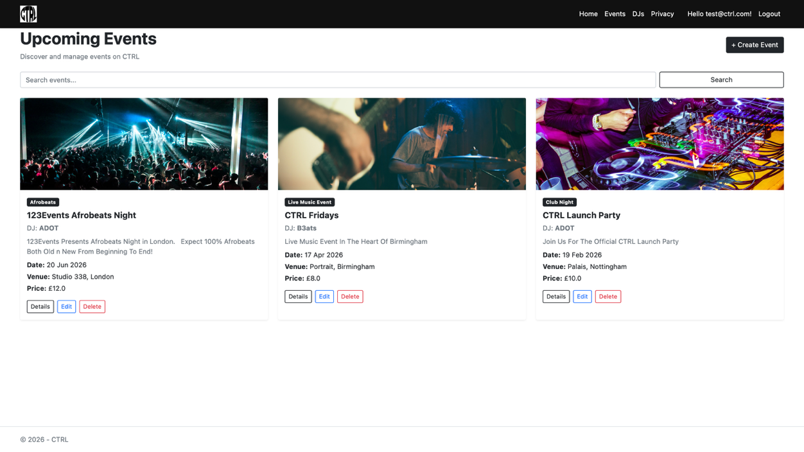

Web application
CTRL
Bringing event discovery, DJ profiles and attendee registration into one place.
Open to graduate opportunities
A Software Engineering graduate with experience across web development, mobile apps and software testing. Open to opportunities across technology.
BSc (Hons) Software Engineering · 2:1
Nottingham Trent University

Built around real interests.
Designed to solve practical problems.
Selected work
A selection of university projects.
Explore the problem, my contribution and what I learned.
Web application
Bringing event discovery, DJ profiles and attendee registration into one place.
Mobile development
A student-focused grocery budgeting app, connecting everyday spending with clearer insights.
Software quality
Testing an existing JavaScript codebase, with a focus on participant-dialog behaviour.
C++ development
Modelling modules, rooms, groups and sessions with a student timetable filtered by group.
An earlier project
A small two-player command-line game exploring classes, card comparisons and scoring. The portfolio edition adds automated tests and a few focused improvements.
A little about me
I’m Joshua, a Software Engineering graduate from Nottingham Trent University, where I achieved a 2:1. Over three years, I explored how software is planned, built and tested, developing a foundation in programming, object-oriented design, databases and problem solving.
My university work covered several areas of technology. For my final-year project, I built CTRL, an event management web application using C#, ASP.NET Core and SQLite, combining my interest in music and events with practical software development. I also developed BudgetBites, a SwiftUI grocery-budgeting app, and a C++ timetabling prototype that models modules, rooms and student groups.
Working on a team project for PsychoJS gave me experience reading an existing JavaScript codebase and writing focused GUI tests with Jest and jsdom. Across individual and group assignments, I practised breaking problems into smaller parts, debugging, explaining my decisions and collaborating with others.
Alongside university, customer-facing event work strengthened my communication, adaptability and ability to stay organised under pressure. I’m open to opportunities across technology, including software development, testing, IT support and other roles where I can apply my technical foundation, develop new skills and contribute to a team.
Connect on LinkedInMy toolkit
Tools and concepts I’ve used
across my projects and coursework.
C# · C++ · Python · JavaScript · Swift · SQL · Haskell · HTML · CSS
ASP.NET Core Razor Pages · Entity Framework Core · SQLite · SwiftUI · Firebase Firestore · Bootstrap
Jest · jsdom · Hspec · Git · GitHub Actions workflows · Debugging · Object-oriented design
What’s next?
I’m open to graduate and entry-level opportunities across technology—from software development and testing to IT support and other technical roles. If you’re looking for someone curious, adaptable and ready to learn, I’d love to hear from you.
joshdara1@gmail.com